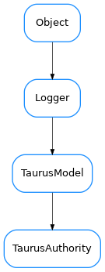

TaurusAuthority¶

-
class
TaurusAuthority(complete_name='', parent=None)[source]¶ Bases:
taurus.core.taurusmodel.TaurusModel-
classmethod
buildModelName(parent_model, relative_name)[source]¶ build an ‘absolute’ model name from the parent name and the ‘relative’ name. parent_model is ignored since there is nothing above the Authority object
- Note: This is a basic implementation. You may need to reimplement this
for a specific scheme if it supports “useParentModel”.
-
property
description¶
-
classmethod